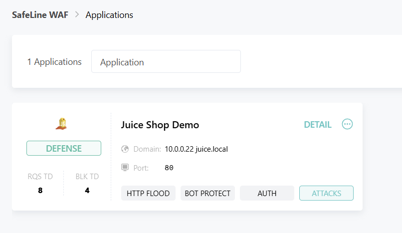

Project Overview
This project demonstrates the deployment, configuration, and threat testing of SafeLine WAF—an enterprise-grade Web Application Firewall—protecting an intentionally vulnerable OWASP Juice Shop application.
The primary objective of this homelab was to construct an inline reverse proxy defense architecture, execute real-world web application attack vectors (SQL Injection, Cross-Site Scripting, Path Traversal), and validate real-time threat detection, automated blocking, and security telemetry logging.
Architecture & Traffic Flow
Technical Specifications & Key Controls
- Network Proxying: SafeLine listens on port
80, inspecting incoming HTTP requests before forwarding clean traffic upstream to Juice Shop (X.X.X.X:3000). - Session Tracking: Utilizes cookie-based session identification via
sl-sessionheaders to monitor visitor behavior and rate limits. - Inline Enforcement: Operating in active Blocking Mode to break malicious HTTP connections before reaching backend code.
- Key Infrastructure: Ubuntu Linux VM, Docker Engine, URL Encoding Utilities, Header Inspection Tools.
Deployment & Configuration Steps
1. Target Application Setup
Deployed the OWASP Juice Shop vulnerable target container locally bound to internal port 3000:
docker run -d --name juiceshop -p 3000:3000 bkimminich/juice-shop2. WAF Gateway Installation & Binding
Deployed SafeLine WAF containers and initialized the web administration console on port 9443. Configured the primary entry pipeline:
- Listening Port:
80 - Domain / Binding:
cybersecurity.veronica-ramirez.com(orX.X.X.X) - Upstream Address:
http://X.X.X.X:3000
Attack Execution & Threat Mitigation Results
To validate rule engine effectiveness, multiple OWASP Top 10 attack payloads were transmitted against the protected proxy interface.
1. SQL Injection (SQLi) — OWASP A03:2021
Objective: Attempt parameter manipulation to bypass authentication or extract raw data.
curl -i "http://X.X.X.X/?id=1%27%20OR%20%271%27=%271"Outcome: 403 FORBIDDEN — SafeLine identified malicious SQL syntax (OR '1'='1') and dropped the connection immediately.
2. Reflected Cross-Site Scripting (XSS) — OWASP A03:2021
Objective: Inject executable JavaScript payload into search HTTP parameters.
curl -i "http://X.X.X.X/?search=%3Cscript%3Ealert(1)%3C/script%3E"Outcome: 403 FORBIDDEN — Intercepted by WAF signature inspection prior to rendering.
3. Path Traversal / Directory Traversal — OWASP A01:2021
Objective: Read sensitive application/system files outside the web root (e.g., /etc/passwd).
curl -i "http://X.X.X.X/../../../../etc/passwd"Outcome: AUDITED / BLOCKED — Identified via URL path normalization filters and terminated.
Evidence & Verification Artifacts


Key Technical Lessons & Insights
- Inline vs. Passive Deployment: Realized the functional operational differences between passive network monitoring (IDS) versus active inline proxy mitigation (WAF).
- URL Path Normalization: Learned how reverse proxies normalize relative directory traversal syntax (
../) before evaluation by internal rule sets or forwarding to upstream endpoints. - Incident Analysis: Refined hands-on telemetry skills inspecting source IP indicators, header attributes, and matching rule signature IDs.